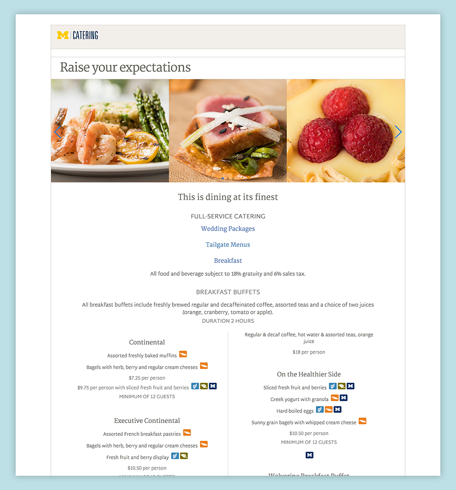

Overview
As a web developer on the University of Michigan’s auxiliary marketing team, I was responsible for maintaining and building websites for the a number of student life and service departments at the school. In February of 2018, University Catering asked our team to redesign their main website.
Role
I was responsible for implementing the design based on mockups and refactoring the frontend codebase. I integrated an API from University Dining Services to dynamically generate the catering menu. I rewrote the frontend code to remove the dependency on the Google Blogger platform and replaced JQuery methods with native DOM API methods. Accessibility improvements were also made by rewriting markup using semantic HTML, assigning ARIA properties, and adding using tabindex.
Links
Click to view the live site.
